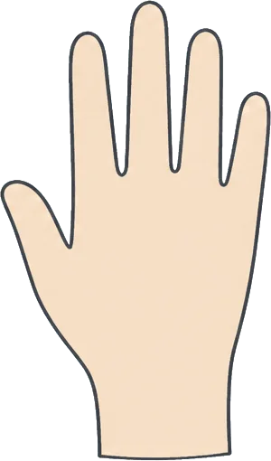
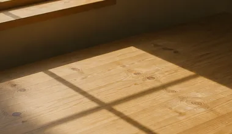
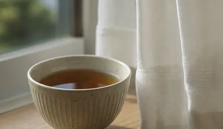

母を送ったあと、はじめて自分の時間に戸惑った
七年の在宅介護が終わった日から、朝起きても呼ぶ声がしない。ほっとした自分に驚いて、しばらく罪悪感が抜けなかった。つどいで同じ話を聞いて、それはずるいことじゃないと思えるようになった。
最後の一年は、夜中に三度起きるのが当たり前だった。送ったあとも明け方になると目が覚めて、静かな廊下を確かめに行ってしまう。体のほうが先に覚えていた。
いまは、母の部屋だった場所に自分の机を置いている。まだ慣れないけれど、そこで本を読む時間が少しずつ長くなってきた。

介護の相手も、続いた年数も、ひとりずつ違います。
読みたいところから開いてください。
七年の在宅介護が終わった日から、朝起きても呼ぶ声がしない。ほっとした自分に驚いて、しばらく罪悪感が抜けなかった。つどいで同じ話を聞いて、それはずるいことじゃないと思えるようになった。
最後の一年は、夜中に三度起きるのが当たり前だった。送ったあとも明け方になると目が覚めて、静かな廊下を確かめに行ってしまう。体のほうが先に覚えていた。
いまは、母の部屋だった場所に自分の机を置いている。まだ慣れないけれど、そこで本を読む時間が少しずつ長くなってきた。
実家まで片道三時間。金曜の夜に発って日曜に戻る生活を二年続けた。抱えきれないと言えたのは、同じ距離を通っている人の話を聞いてからだった。今は月に一度、頼る先を決めている。
職場には「実家の用事」とだけ伝えていた。月曜の朝はいつも疲れが抜けず、小さなミスが続いた。自分がしっかりしていないせいだと思い込んでいた。
つどいで、同じように通っている人が、地元のケアマネジャーさんとの連絡の取り方を教えてくれた。行かなくても回る週末をひとつ作れたことが、いちばん大きかった。
中学のころから母の身のまわりを手伝ってきた。友だちに話しても伝わらない気がして、ずっと黙っていた。同世代の人が同じ暮らしをしていたと知って、はじめて自分の十年に名前がついた。
放課後はまっすぐ帰って、夕飯と薬の準備をする。部活に入らなかった理由を聞かれるたびに、それらしい言い訳を考えていた。
相談時間で、はじめて自分の話を最後まで聞いてもらった。あのころの自分にも、話していい場所があったと伝えたい。いまは月に一度、聞く側として参加している。

何度も同じことを聞かれ、つい強い言い方をしてしまう自分が嫌だった。つどいで「疲れているときは離れていい」と言われ、週に一度だけ夕方を空けた。それだけで、声の出し方が変わった。
父は昔から穏やかな人だった。だからこそ、きつい言葉を返されると、父がいなくなってしまったようで悲しかった。
疲れているときほど、言い方がとがる。それに気づいてからは、夕方の家事をひとつ減らした。父の機嫌より先に、自分の疲れを見るようにしている。

妻の介護を五年。近所づきあいも減り、一日中だれとも話さない日が続いた。オンラインなら顔を出さずに参加できると聞いて、台所からつないだのが最初だった。今は聞き役にまわることが多い。
料理も洗濯も、妻が倒れてから覚えた。わからないことを人に聞くのが苦手で、何でも自分で調べて済ませてきた。
画面越しに「それは大変でしたね」と言われたとき、返す言葉が出てこなかった。五年分のひとことだった気がする。妻を見送ったいまも、月に一度はつないでいる。
障害のある妹の予定は全部わたしの手帳にあった。結婚を考えたとき、はじめてそれを重いと感じた自分を責めた。同じ立場の人と話して、抱える量は分け直していいのだと知った。
両親が年をとるにつれて、妹の通院や手続きは自然とわたしの役目になった。だれかに頼むという選び方は、最初から頭になかった。
きょうだいの立場で話せる人に会って、自分の暮らしを考えるのはわがままではないと思えた。いまは相談先の窓口といっしょに、少しずつ分担を決めている。
迷惑をかけたくなくて休みの理由をぼかしていた。制度の名前を知って上司に話したら、思ったより静かに受けとめられた。言わなかった三年ぶんの気の張りが、その日にほどけた。
有給休暇を細かく使い切り、足りない分は早退でしのいでいた。周りに気づかれないようにすることに、介護と同じくらい気を使っていた。
話してからは、通院の日を前もって伝えられるようになった。隠していたころより、仕事にも集中できている。
夫を送って三年。空いた時間の使い方がわからず、つどいの見学に来た。話を聞くだけのつもりが、いつのまにか新しく来た人の隣に座るようになった。あの日々に意味があったと、今は思える。
介護していたころは、毎日が段取りの連続だった。その段取りがなくなって、何をしていいかわからなくなった。
新しく来た人が話しはじめるまで、黙ってとなりにいる。それだけのことが、わたしにはちょうどいい。あのころの自分にも、そういう人がいてくれたらと思う。
窓口を回るたびに手続きの話ばかりで、しんどさを言う場所がなかった。つどいでは結論を出さなくていい。ただ順番に話して、順番に聞く。その時間があるだけで、翌週の電話がかけられる。
母は隣の県でひとり暮らしをしている。電話口の声がいつもより小さいだけで、その夜は眠れなくなる。
つどいで話すようになってから、心配なことを紙に書き出すようになった。窓口で何を聞けばいいのか、前よりはっきりしてきた。
進学も就職も、通える距離かどうかで選んできた。それを話したら「よく続けたね」と言われて、はじめて泣いた。今は自分の予定から先に書く練習をしている。まだうまくはない。
祖母の介護をしていた母を、高校のころから手伝ってきた。家を空けられない日が多く、友だちとの約束はいつも当日に断っていた。
手帳に自分の予定を先に書くのは、思ったよりむずかしい。それでも、書いた予定をひとつ守れた週は、少しだけ自分を信じられる。
介護と家事で一日が終わり、気づけば十年が過ぎていた。つどいで聞いた「自分の時間を先に予約する」を真似して、夕方の三十分をお茶の時間にした。小さいけれど、確かに戻ってきた時間だ。
父の介護がはじまったのは、子どもが中学に上がった年だった。家のことは全部自分の仕事だと、だれに言われたわけでもなく思っていた。
お茶の時間には、電話にも出ないことにした。家族ははじめ驚いていたけれど、いまはその三十分、声をかけずに待ってくれる。
きょうだいに頼むのは気が引けるし、外の手を借りるのは母がいやがる。そう決めつけて全部ひとりで回していた。同じ思い込みの話を三人から聞いて、翌月にはじめて短期の預かりを使った。
平日は会社、週末は母の家。休みの日に休んだ記憶がない一年だった。疲れていることにも、気づかないふりをしていた。
はじめて預かりを使った週末、母は思ったよりあっさり出かけていった。決めつけていたのは自分のほうだった。いまは月に一度、その週末を自分のために使っている。
※お名前はすべてニックネームです。掲載にあたって、ご本人に内容を確認していただいています。
※内容はおひとりずつの経験で、介護の事情は家庭ごとに違います。同じやり方がどなたにもあてはまるわけではありません。要介護認定や制度の手続きについては、お住まいの地域包括支援センターや市区町村の窓口へおたずねください。